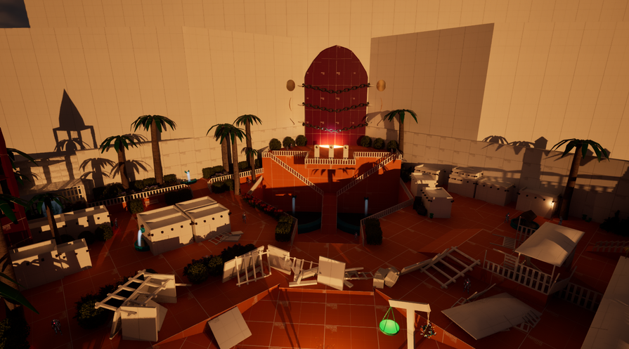

The Call of the Ancients is a 3rd-person Action-Adventure game that takes inspiration from the early Assassins Creed games and the Tomb Raider franchise. The player is tasked with finding three "tools" of a warrior to finish the level. This is done via open design where the player can take any path they want to obtain the required weapons to finish the level.
A dagger allowing for backstab kills that immediately kill the AI is given at the beginning of the quest. This gives the player a way to remove enemies while at the same time provides a clear limitation. Since the player cannot engage the enemy directly, I designed several paths that provide cover close to the starting area. The player starts in a safe area and has a birds eye view of landmarks which allows them to plan their path before venturing forth.
Standing at the point of any of the landmarks allows the player to see the other landmarks and the landmarks themselves acts as navigational reference points. It is designed in such as way that every corner of the map has a landmark and navigation is easy and accessible without any map or minimap.
I decided to use very natural afternoon light since I wanted it to be dark enough for it to be plausible that the AI could not see the player while at the same time giving enough light to the player to see the full level. Throughout the level both light and shadows are used to attract and guide players towards objectives and secrets.
I wanted to create a narrative with the environment, not just in the space the player moved, but also in the space surrounding the gameplay area. I did this by creating an armada of ships a lighthouse and walled of the other areas. I also wanted the goal to be clearly represented by a locked door and made sure to build large chains for an even larger door leading into an even larger keep. Each iteration led to a larger and larger non-gameplay environment that greatly contributed to the esthetic of the level and the curiosity of the players.

Sword
The sword acts as a melee weapon that does damage from any direction. This is used to take out the AI enemy and is a part of the pillar puzzle. The sword is meant to inspire courage and make the player feel empowered by providing a way to face enemies head on without having to use stealth.
Dagger
The dagger can be used to assassinate enemies when used against their backs. The way the weapon functions forces the player to take a stealthy approach. Making the player feel weak in comparison to the enemies. The weapon is the first one to be introduced and acts at the starting weapon.
Bow
The bow acts at the ranged weapon. The bow has an infinite amount of arrows and is a part of the pillar puzzle. The bow is a way to outsmart the enemy by engaging them from afar as well as a way to thin out the enemy ranks.
Weapon Switching
Weapons are switched instantly and are equipped in the matching slot. Some weapons cannot be combined, such as the bow and shield. Other weapons, however, can be dual wielded such as the sword and dagger or the sword and shield allowing for varied combat with no downtime between weapons.
AI
The AI only has sight and cannot hear the player. This allows the player to more easily sneak up on the enemy and assassinate them. The enemies will chase down the player at 90% of the player speed. This still gives a spotted player the chance to escape an encounter. They will stop chasing the enemy when LOS is broken.
Puzzle Interactions
Various interactable objects affect the world and allow traversal to otherwise unreachable places. Examples are moving an elevator, opening a hidden passage or turning a pillar.
Satisfying Ending
When the player has gathered all three parts needed for the puzzle, they can interact with the previously unavailable pillars. When these are rotated into the correct position, the player reaches the end of the level. Hints for the solution are both in the quest given to the player and the walls near the door. A cinematic experience acts as the end of level reward.
Iterations
My plan was to establish the entirety of the game in the first draft for increased initial cohesion instead of having to puzzle together separate parts to make a linear level. This proved very effective for the team since it solidified our vision of the game and the flow of progression.
The first draft showed that movement was the main focus of player enjoyment and as such the first round of iteration focused a lot on adapting the LOS, spacing and available platforms to better match the movement. Since movement was easy to pick up and players found it easy to master in non-combat situations, hazardous areas were added to provide a non-combat challenge as well.
Environmental destruction was a large part of the game that began as simple fun for the player to become integrated in the exploration. Secrets, objectives and platforms were hidden behind breakable walls. This also served to make sure players switched between the available weapons and this in turn led to a larger variety of playstyles in combat.
First iteration
This was the first iteration where I wanted to plan what sections the level would contain. Due to the open design of the level and progression I wanted all the section-defining landmarks to be visible from the start location and as such LOS was a key factor going forward.
Level Flowchart
A full level flowchart envisioning the various path options and objective order. This helped to serve as a framework in maintaining the open-design mindset when iterating on the level design.
Second Iteration - 1
Landmarks added and end-game goal clearly visible and centered. Environmental meshes added for LOS limitation and focus.